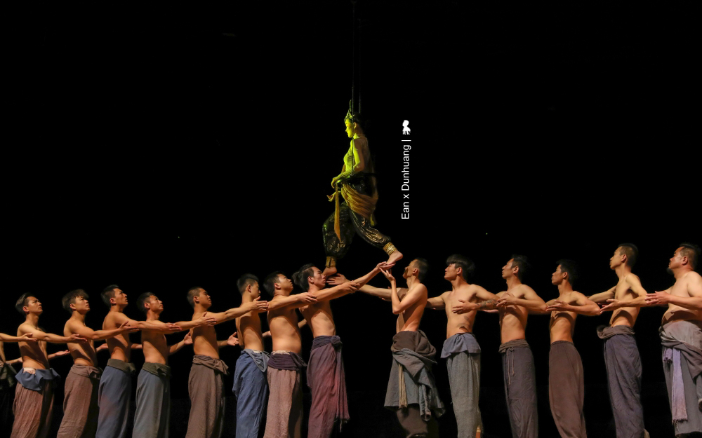

「又見敦煌」高沈浸觀劇新體驗 從歷史走進去，從人生走出來
_設計 x 生活美學 2019/10/1 _圖文 陳耀恩 Ean Chen 在拜見莫高窟的前一晚，我很慶幸先觀賞了一部非常受歡迎的室內情景體驗劇「又見敦煌」，那不僅讓我隔天造訪千年莫高窟時能帶著更多認識，更重要是懷抱著更多疼惜與珍視，當面對洞窟裡，那些還在與曾經存在的人類瑰寶時。這齣劇自2016 年 9 月首演至今已演出逾2100 場、接待超過138 萬人次，在剛過的旅遊旺季- 今年 8 月甚至還創下單日演出12 場的紀錄，單場90 分鐘的劇目，從早上 8 點演到凌晨 1 點，還有觀眾抱憾買不到票，是目前敦煌最具代表性的必看表演之一。
總導演王潮歌，數萬觀眾每天在大陸多處同時觀賞她的節目
如此火紅倒也不是太令人意外，因為要知道該劇的總導演王潮歌，大陸最具代表性的多部「印象系列」實景劇就是她的作品，每天同時有2-3
萬人在至少8處景區欣賞她的演出，繼《印象》與《又見》系列，她最新《只有》系列的開篇作品「只有峨眉山」這個月剛進行首演。
從數百本書取經構思，兩年打造「又見敦煌」
而讓王潮歌覺得幾乎沒有成功可能的「又見敦煌」ㄧ劇，是她花了約兩年籌備，期間閱讀數百本敦煌相關著作，依據構想、花了15
個月打造有著28
台升降機與複雜機關的專屬劇場，不光內在可觀、外觀也具巧思，外型以「沙漠中的一滴水」為意象採用玻璃和岩石覆蓋，藉由白天的日光和夜晚燈光的照射，不同時間下會讓人見到不同形狀的水滴。
走動式觀劇新體驗
「這是你從來沒有過的看劇體驗」晚餐後前往湖藍劇場的巴士上，我們的專業導遊莎莎說她每看一次哭一次，透過她的描述，「先要站著看」、「需走動」、「演員離你很近」等幾個關鍵字，我大概可以猜到在大陸開表演形式先河的「又見敦煌」可能是怎麼一回事。果不其然，在觀劇過程中，蠻多表演手法與呈現方式，讓我想到了這兩年讓我印象最深刻的三齣劇，那有著台灣雲門《流浪者之歌》的禪意境、《極限震撼+
FUERZA BRUTA》的多面舞台、互動式表演與聲光效果，還有紐約《Sleep No
More》與演員零距離的高浸入感觀劇體驗，整體來說的確頗為創新與成功，若有美中不足，可能就是在觀眾不自覺被分成16
組、進入不同洞窟場景的表演場域時，因怕混亂而多了些規範與宣導而讓觀眾容易出戲，不像《Sleep
No More》來得自然與擁有那麼高的沈浸感。
不重現歷史，引導觀眾以自己觀點看待歷史
聽起來可能有點複雜，其實現場觀看馬上就能進入狀況，特別是王潮歌的劇，當音樂一下，馬上就讓觀眾進入到設定的情緒中。整齣劇以六個線索人物為脈絡、分別在五個場景講述橫跨千年的故事。帶著觀眾穿越時空一會兒是百年前、一下又回到千年前，從今生開始，一世世的回溯關於敦煌的過去，我用略帶戲謔的誇張形容，若敦煌是一個人，大概觀眾就是走動式的觀落陰。但有意思的是，王潮歌並沒有要重現敦煌悠遠的歷史，而是讓觀眾走進歷史，藉由劇中人物對話來引導著觀眾思考，以千年為刻度、宏觀的重新審視每個歷史上的單一事件。例如百年前，將莫高窟許多寶貝賣給老外的道士王圓籙，當時那個決定莫高窟命運的舉措，到底是對是錯？沒有標準答案，就看怎麼看。
「又見敦煌」演的是歷史，更是人生
當戲接近尾聲，王潮歌藉由劇中人物丟了個問題「一千年有多長？」劇裡的詩人回答：「不過一瞬間。春一去，冬一來，一千年就過去啦。
」可不是...所有、所有的一切，其實都是一瞬間而已，但，有時一念之間的心魔，卻會又把人永生的禁錮。這齣戲演的不光是歷史，更是人生。
離開劇場，黃綺珊主唱的主題曲「一瞬間」，仍迴盪不去，不光觀賞入戲，下了戲，還有很強的後勁！
《又見敦煌 表演資訊》
表演時間：晚上 8 點到 9 點半
湖藍劇場位置：敦煌市區向東約 9 公里處（314
省道南側）莫高窟數字展覽中心西側
門票價格：
• 淡季（當年開始演出到 6/30、10/8 到當年演出結束）
普通票： 298 人民幣、至尊席：588 人民幣
• 旺季（7/1 - 10/7
普通票： 368 人民幣、至尊席：688 人民幣
有內涵的東西，是需要經過長時間的累積，再經由導演或設計師等，透過理解並爬梳出其中的溝通元素，精簡再精簡。對一個參與者來說，這是一個痛苦的過程，也是真正體驗了千年一瞬間！
舞台劇跟電影一樣，需要許多不同的美學涵養在裡面，從舞台設計、場景設計、服裝設計到燈光設計等，不同的工作有不同專業，能夠整合在一起已經非常了不起了，同時還能兼顧創新：移動式的體驗，真的不得不讓人讚嘆啊！